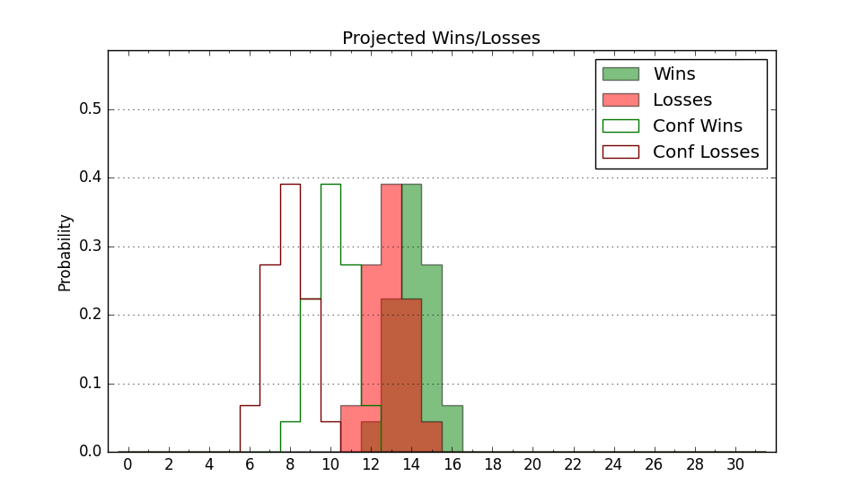

| Home | Game Probabilities | Conferences | Preseason Predictions | Odds Charts | NCAA Tournament |
| City: | Martin, Tennessee | |
| Conference: | Ohio Valley (2nd)
| |
| Record: | 8-6 (Conf) 12-11 (Overall) | |
| Ratings: | Comp.: -6.8 (241st) Net: -6.8 (241st) Off: 98.6 (248th) Def: 105.4 (236th) SoR: 0.0 (154th) |
| Remaining | ||||||
|---|---|---|---|---|---|---|
| Date | Opponent | Win Prob | Pred. | |||
| 2/16 | SIU Edwardsville (204) | 56.2% | W 75-73 | |||
| 2/18 | @ Tennessee Tech (281) | 42.5% | L 72-74 | |||
| 2/23 | Tennessee St. (282) | 71.6% | W 80-73 | |||
| 2/25 | @ Morehead St. (264) | 39.0% | L 68-71 | |||
| Previous | Game Score | |||||
| Date | Opponent | Win Prob | Result | Off | Def | Net |
| 11/7 | @Pittsburgh (59) | 6.4% | L 58-80 | -16.0 | 15.0 | -1.0 |
| 11/9 | @Youngstown St. (134) | 17.0% | L 72-90 | -3.8 | -3.7 | -7.5 |
| 11/18 | @Mississippi (108) | 13.2% | L 68-72 | 1.0 | 8.8 | 9.9 |
| 11/20 | Prairie View A&M (276) | 70.4% | W 80-79 | 12.9 | -10.4 | 2.5 |
| 11/22 | @Arkansas St. (317) | 52.5% | L 64-70 | -8.1 | -1.3 | -9.4 |
| 11/28 | McNeese St. (342) | 84.1% | W 86-83 | 10.6 | -23.0 | -12.4 |
| 12/3 | @UNC Asheville (160) | 20.3% | L 83-90 | 19.8 | -16.1 | 3.8 |
| 12/11 | Chicago St. (274) | 70.1% | W 75-74 | -2.2 | 1.0 | -1.2 |
| 12/17 | @Bowling Green (270) | 40.1% | W 75-67 | 2.8 | 15.4 | 18.2 |
| 12/29 | @Little Rock (326) | 55.0% | L 74-88 | -12.2 | -5.2 | -17.4 |
| 12/31 | Morehead St. (264) | 68.6% | W 64-57 | -11.4 | 13.4 | 2.1 |
| 1/5 | Southeast Missouri St. (272) | 69.8% | W 87-82 | 11.6 | -3.8 | 7.8 |
| 1/7 | Tennessee Tech (281) | 71.5% | L 80-84 | -4.8 | -11.6 | -16.4 |
| 1/12 | @Tennessee St. (282) | 42.6% | W 77-66 | 6.0 | 10.4 | 16.4 |
| 1/14 | @Southern Indiana (257) | 38.2% | L 66-80 | -16.7 | -1.4 | -18.1 |
| 1/19 | @Southeast Missouri St. (272) | 40.4% | W 80-60 | 7.9 | 30.0 | 37.9 |
| 1/21 | Eastern Illinois (338) | 82.7% | W 91-78 | 14.4 | -10.8 | 3.7 |
| 1/26 | Lindenwood (328) | 81.4% | W 66-59 | -13.4 | 10.6 | -2.8 |
| 1/28 | Southern Indiana (257) | 67.8% | W 86-83 | -1.5 | -2.1 | -3.6 |
| 2/2 | @SIU Edwardsville (204) | 27.3% | L 75-89 | 1.8 | -8.4 | -6.6 |
| 2/4 | @Lindenwood (328) | 56.2% | L 75-80 | 7.8 | -19.1 | -11.3 |
| 2/9 | @Eastern Illinois (338) | 58.3% | L 75-77 | 1.4 | -8.3 | -6.9 |
| 2/11 | Little Rock (326) | 80.7% | W 84-61 | -7.4 | 20.4 | 13.0 |
| Stats & Trends | |||||
|---|---|---|---|---|---|
| Current | Day | Week | Month | Season | |
| Composite | -6.8 | +0.0 | +0.2 | +0.6 | +1.0 |
| Comp Rank | 241 | +2 | +4 | +6 | +13 |
| Net Efficiency | -6.8 | +0.0 | +0.2 | +0.6 | -- |
| Net Rank | 241 | +5 | +4 | +6 | -- |
| Off Efficiency | 98.6 | +0.0 | -0.2 | +0.0 | -- |
| Off Rank | 248 | -- | -4 | -17 | -- |
| Def Efficiency | 105.4 | +0.0 | +0.3 | +0.6 | -- |
| Def Rank | 236 | -- | +11 | +19 | -- |
| SoS Rank | 349 | -1 | -6 | -12 | -- |
| Exp. Wins | 14.1 | +0.0 | -0.4 | +0.2 | +0.1 |
| Exp. Conf Wins | 10.1 | +0.0 | -0.4 | +0.2 | +0.0 |
| Conf Champ Prob | 8.1 | -0.2 | -3.5 | +3.1 | -7.0 |

| Advanced Stats | ||
|---|---|---|
| Stat | Value | Rank |
| Off Eff FG % | 0.473 | 295 |
| Off Ast Ratio | 0.119 | 334 |
| Off ORB% | 0.237 | 270 |
| Off TO Rate | 0.152 | 145 |
| Off FT Ratio | 0.333 | 127 |
| Def Eff FG % | 0.508 | 183 |
| Def Ast Ratio | 0.158 | 293 |
| Def ORB% | 0.296 | 279 |
| Def TO Rate | 0.147 | 245 |
| Def FT Ratio | 0.343 | 253 |